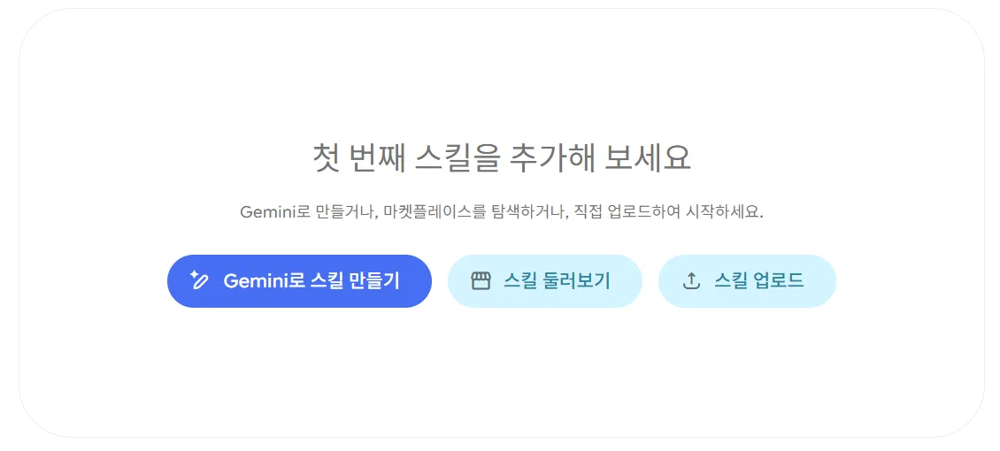
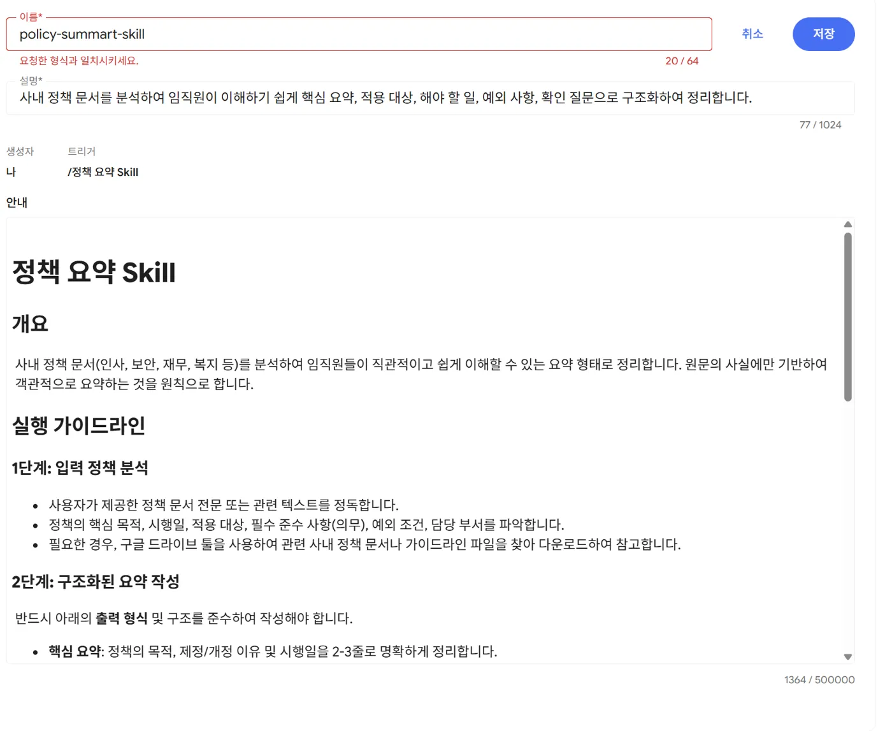

지난 보고서 찾기부터 인터뷰 분석까지, Gemini로 쉽게
SharePoint에 쌓인 지난 리서치 보고서를 찾아 요약하고, 새로 모은 인터뷰와 설문을 정리하는 방법을 알려 드립니다.
교육 순서
직접 따라 하지 않아도 됩니다. 강사가 두 가지 업무를 처음부터 끝까지 화면으로 보여 드리고, 그 방식을 스킬로 저장해 다시 쓰는 방법까지 소개합니다. 교육이 끝나면 이 교재의 질문을 복사해서 바로 써 보세요.
| 시간 | 순서 | 무엇을 하나요 |
|---|---|---|
| 00:00–00:05 | 시작 | 오늘 배울 내용과 두 가지 업무 소개 |
| 00:05–00:15 | Gemini Enterprise 알아보기 | SharePoint 문서를 어떻게 찾는지, 왜 사람마다 결과가 다른지, 기능 세 가지(채팅·Deep Research·프로젝트) |
| 00:15–00:32 | 1. 지난 보고서 찾아 요약하기 | 최근 1년 결제·쿠팡페이 보고서를 찾아 핵심 요약 → 출처 확인 |
| 00:32–00:49 | 2. 인터뷰·설문 분석하기 | 인터뷰 8개와 설문 300명분으로 자주 나온 이야기 → 그룹별 비교 → 참가자 발언 → 개선 제안 |
| 00:49–00:55 | 3. 스킬로 저장하기 | 위 두 업무의 정리 방식을 스킬로 저장해 한 줄로 다시 쓰기, 팀과 나누기 |
| 00:55–01:00 | 정리 | 바로 쓰는 질문 모음, 결과 확인하는 습관, 개인정보 주의 |
| 01:00–01:30 | 질의응답 | 교육 중 채팅창에 남겨 주신 질문부터 답변 |
Gemini Enterprise 알아보기
일반 챗봇과 다른 점은 두 가지입니다. 회사 자료를 찾아서 답하고, 어디서 찾았는지(출처)를 함께 보여 준다는 점입니다.
SharePoint 문서는 어떻게 찾나요?
회사 관리자가 Gemini Enterprise와 SharePoint를 미리 연결해 두었습니다. 그래서 질문하면 Gemini가 SharePoint의 문서를 찾아 읽고 답합니다. 연결하는 방식은 두 가지가 있습니다.
| 방식 | 쉽게 말하면 | 알아 둘 점 |
|---|---|---|
| 실시간으로 찾기 (연합 검색) | 질문할 때마다 SharePoint에 가서 찾아 옴 | 한 번에 20개 정도만 가져옴 · 첨부파일 속 내용은 못 찾음 · 표가 많거나 스캔한 PDF는 잘 못 읽음 |
| 미리 모아 두기 (데이터 수집) | 문서를 미리 읽어 두고 그 안에서 찾음 | 복잡한 PDF도 더 잘 읽음 |
기능 세 가지, 언제 무엇을 쓰나요?
채팅
물어보면 바로 답합니다. 파일을 올리거나, 채팅창의 Connectors에서 SharePoint만 켜고 물어볼 수 있습니다.
Deep Research
먼저 "이렇게 조사하겠다"는 계획을 보여 주고, 자료를 꼼꼼히 읽은 뒤 출처가 달린 보고서를 써 줍니다. 1~2분짜리 음성 요약도 만들어 줍니다.
프로젝트
연구 하나에 필요한 자료(최대 50개)를 한곳에 모아 두고 그 안에서만 대화합니다. 내 대화 내용은 나만 봅니다.
모델을 고를 수 있다면: Auto 알아서 고름 · Flash 빠르고 간단한 질문용 · Pro 느리지만 깊이 생각함. 보고서 여러 개를 합치거나 분석할 때는 Pro를 고르세요.
지난 리서치 보고서 찾아 요약하기
SharePoint 여기저기 흩어진 지난 보고서를 찾아서, 출처 링크가 달린 핵심 요약으로 만듭니다.
시연 자료: 가짜 보고서 12개(PDF). 10개는 최근 1년 안에 쓴 것이고, 2개는 그보다 오래된 것, 1개는 결제와 상관없는 검색 연구입니다. Gemini가 날짜와 주제를 잘 골라내는지 같이 봅니다. 자료 내려받기
먼저 어떤 보고서가 있는지 목록부터 보기
채팅창의 Connectors를 눌러 SharePoint만 켜고 Google 검색은 끕니다. 그다음 관련 보고서 목록부터 달라고 합니다.
1단계 · 목록 보기SharePoint에서 2025년 11월부터 2026년 10월 사이에 쓴 리서치 보고서 중 장바구니·쿠폰·결제 또는 쿠팡페이와 관련된 것을 모두 찾아 줘. 표로 보여 줘: 작성일 | 보고서 제목 | 연구 방법 | 링크- "최근 12개월"보다 날짜를 직접 적으면 더 정확합니다.
- 목록을 먼저 보면 빠진 보고서나 엉뚱한 보고서를 바로 알 수 있습니다.
Deep Research로 한 번에 정리하기
왼쪽 메뉴 Deep Research → Sources에서 SharePoint 고르기 → 질문 입력 → Submit
2단계 · 고객사 예시 질문Summarize key findings from past research reports on Checkout Experience / Coupang Pay adoption conducted over the past 12 months (Nov 2025 – Oct 2026). Highlight the top user pain points and key recommendations. 답은 한국어로, 아래 순서로 써 줘. 1. 핵심 요약 (5줄 이내) 2. 주요 불편 사항 표: 불편 사항 | 몇 개 보고서에서 나왔는지 | 심각도 | 근거 보고서 3. 개선 제안 (중요한 순서대로) 4. 출처: 보고서 제목과 링크- 먼저 "이렇게 조사할게요"라는 계획이 나옵니다. 빠진 게 있으면 질문을 고쳐서 계획을 다시 받고, 괜찮으면 Start Research를 누르세요.
- 다 끝나면 출처가 달린 보고서와 음성 요약이 나옵니다.
출처를 눌러서 확인하기
답 아래 Sources를 누르면 어떤 문서를 보고 답했는지 나옵니다. 문서 이름에 마우스를 올리면 답의 어느 부분이 그 문서에서 나왔는지 표시됩니다.
- 2025년 5월·7월 보고서처럼 기간 밖 자료가 섞이지 않았나요?
- 검색 필터 연구처럼 주제와 상관없는 자료가 들어가지 않았나요?
- "보고서 3개에서 나옴" 같은 숫자를 원문 2~3개로 직접 확인했나요?
- 이탈률·응답 비율 같은 숫자가 원문과 같나요?
더 물어보며 다듬기
4단계 · 이어서 묻기위 불편 사항 중 '쿠폰 적용이 헷갈림'이 2026년 7월 개편안 테스트 뒤에도 남아 있는지 보고서를 근거로 설명해 줘. 근거가 없으면 없다고 말해 줘.
결과 예시 보기 (시연 자료 기준)
핵심 요약: 최근 1년 결제·쿠팡페이 연구에서 가장 자주 나온 문제는 쿠폰 적용 규칙이 헷갈린다는 점과 결제수단을 바꾸는 단계가 많다는 점입니다. 쿠팡페이는 가입 중 본인인증 단계에서 그만두는 사람이 가장 많고, 결제가 실패했을 때 이유를 알려 주지 않는 문제가 최근 새로 나타났습니다.
| 불편 사항 | 보고서 수 | 근거 보고서 |
|---|---|---|
| 쿠폰 적용 순서·중복 여부가 헷갈림 | 3 | R01 R03 R07 |
| 결제수단 바꾸는 단계가 많음 | 3 | R01 R05 R10 |
| 쿠팡페이 가입 중 본인인증에서 그만둠 | 2 | R02 R05 |
| 결제 실패 이유를 알려 주지 않음 | 2 | R09 R10 |
| 카드·쿠팡페이 혜택 비교가 어려움 | 2 | R04 R09 |
| 배송비·최소주문금액을 늦게 알려 줌 | 2 | R03 R08 |
빠져야 하는 자료: R06(주제 무관), R11·R12(기간 밖)
- 파일 이름에 날짜와 주제 넣기:
2026-04_쿠팡페이_원클릭결제_인터뷰.pdf - 첫 페이지에 요약·연구 방법·작성일을 글자로 적기 (그림 속 글자는 잘 못 읽습니다)
- 암호가 걸린 파일, 보관(archived) 폴더, 첨부파일 속 내용은 못 찾을 수 있습니다
인터뷰·설문 원자료 분석하기
인터뷰 녹취와 설문 결과를 올려서 자주 나온 이야기를 찾고, 사용자 그룹끼리 비교하고, 참가자가 한 말을 그대로 뽑아 개선 제안까지 만듭니다.
시연 자료: 로켓프레시 장보기 경험 인터뷰 8개(1인 가구 3명, 맞벌이·자녀 가구 3명, 시니어 2명)와 만족도 설문 300명분(CSV·엑셀). 자료 내려받기
자료 올리기
채팅창의 + 버튼으로 파일을 올립니다. 같은 연구를 여러 날 이어서 볼 거라면 Projects → New project → Knowledge 탭에 올려 두세요.
파일 한 파일 최대 파일 한 파일 최대 텍스트 (TXT) 7 MB CSV 7 MB 워드 (DOCX) 3 MB 엑셀 (XLSX) 50 MB PDF 100 MB 녹음·영상 (MP3·MP4) 200 MB 한 대화에 올린 파일과 대화 내용이 너무 많으면(80만 토큰 초과) 오류가 납니다. 그럴 땐 새 대화로 나누거나 프로젝트를 쓰세요.
자주 나온 이야기부터 찾기
한 번에 다 시키지 말고 나눠서 시키세요. 더 정확하고, 중간에 방향을 고칠 수 있습니다.
2-1 · 자주 나온 이야기(테마)올린 인터뷰 8개는 로켓프레시 장보기 경험 연구야. 여러 사람이 반복해서 말한 이야기(테마)를 찾아 줘. 테마마다: - 이름과 한 줄 설명 - 말한 참가자 번호(P01 등)와 인원 (8명 중 몇 명) 진행자 질문은 빼고, 참가자가 한 말만 근거로 써 줘.2-2 · 그룹별 비교표위 테마로 불편 사항을 정리해서 사용자 그룹별 비교표를 만들어 줘. 열: 불편 사항 | 1인 가구 | 맞벌이·자녀 가구 | 시니어 | 대표 참가자 칸에는 그 그룹에서 말한 사람 수와 핵심 내용을 짧게 적어 줘.참가자가 한 말 그대로 뽑기
3단계 · 발언 인용불편 사항마다 그 문제를 가장 잘 보여 주는 참가자 발언을 1~2개씩 원문 그대로 가져와 줘. - 문장을 고치거나 줄이지 말 것 - 발언 뒤에 (참가자 번호, 그룹) 표시 - 원문에서 찾을 수 없으면 "해당 발언 없음"이라고 쓸 것냉동 만두를 하나 더 넣었어요. 사실 필요 없었는데, 배송비 내는 것보다 낫다 싶어서. 혼자 살면 매번 이래요.P01 · 1인 가구
새벽에 오는 건 좋은데 아침 7시 전에 꼭 와야 해요. 아이 도시락을 싸야 하거든요.P04 · 맞벌이·자녀 가구
설문 숫자로 확인하기
엑셀·CSV 파일은 Gemini가 직접 계산합니다. 인터뷰에서 나온 이야기가 설문 숫자로도 보이는지 확인합니다.
4단계 · 설문과 맞춰 보기설문 파일에서 사용자 그룹별로 만족도 5개 항목의 평균과 추천 의향(NPS) 평균을 표로 계산해 줘. 그룹마다 가장 낮은 항목을 표시하고, 인터뷰에서 나온 이야기와 맞는지 한 줄씩 설명해 줘. 계산에 쓴 응답 수도 같이 보여 줘.개선 제안으로 마무리하기
5단계 · 개선 제안지금까지 분석한 내용으로 제품·UX 개선 제안을 만들어 줘. 표: 우선순위 | 개선 제안 | 해결하는 불편 사항 | 대상 그룹 | 근거 (인터뷰 번호, 설문 숫자) 근거가 약한 제안은 '추가 확인 필요'라고 표시해 줘.
결과 예시 보기 (시연 자료 기준)
| 사용자 그룹 | 응답 수 | 신선도 | 대체 상품 | 배송 시간 | 앱 사용 | 최소주문금액 | 추천 의향 |
|---|---|---|---|---|---|---|---|
| 1인 가구 | 120 | 3.60 | 3.51 | 3.88 | 4.03 | 2.53 | 6.91 |
| 맞벌이·자녀 가구 | 110 | 3.51 | 3.11 | 2.83 | 3.80 | 3.62 | 6.47 |
| 시니어(60+) | 70 | 3.54 | 3.50 | 3.93 | 2.66 | 2.84 | 6.54 |
만족도는 1~5점, 추천 의향(NPS)은 0~10점 평균입니다. 빨간 숫자는 그룹마다 가장 낮은 점수입니다.
| 불편 사항 | 1인 가구 | 맞벌이·자녀 가구 | 시니어 |
|---|---|---|---|
| 최소주문금액 맞추기 어려움·소량 상품 부족 | P01·P03 (P02는 한 번에 몰아 사서 괜찮음) | – | P08 |
| 도착 시간이 일정하지 않음 | – | P04·P06 (7시 전 도착 필요) | – |
| 품절 시 원치 않는 상품으로 대체 | P02 | P05 | – |
| 신선도가 들쭉날쭉·유통기한 짧음 | P01·P02·P03 | P04·P05 | P07 (과일은 직접 보고 삼) |
| 보냉백·아이스팩이 너무 많음 | P01 | P04·P06 | – |
| 글씨가 작고 다시 주문하기 어려움 | – | P05 (다시 주문) | P07·P08 |
- 녹취에 있는 이름·전화번호·주소는 P01 같은 번호로 바꾼 뒤 올립니다.
- 고객 자료는 회사가 허락한 Gemini Enterprise에서만 다룹니다.
- 오래된 대화는 관리자가 정한 기간이 지나면 자동으로 지워집니다. 남겨야 할 결과는 문서로 옮겨 두세요.
자주 하는 분석을 스킬로 저장하기
매번 긴 질문을 다시 쓰지 않도록, 정리하는 순서와 형식을 한 번 저장해 두고 이름만 불러서 쓰는 기능입니다. 화면 메뉴 이름은 기술(영어 화면에서는 Skills)입니다.
스킬은 무엇인가요?
Gemini에게 주는 저장된 업무 설명서입니다. 무엇을, 어떤 순서로, 어떤 모양으로 답할지 적어 둡니다.
질문 모음과 무엇이 다른가요?
질문 모음은 매번 복사해서 붙여 넣어야 합니다. 스킬은 저장되어 있어서 이름만 부르면 되고, 내용이 맞으면 Gemini가 알아서 골라 쓰기도 합니다.
리서치팀에서는?
업무 1의 "핵심 요약 → 불편 사항 표 → 개선 제안 → 출처" 형식을 스킬로 저장해 두면, 누가 정리해도 같은 모양의 결과가 나옵니다.
스킬 만들기
스킬 화면 열기
왼쪽 메뉴에서 기술을 누릅니다. 세 가지 시작 방법이 나옵니다.
- Gemini로 스킬 만들기: 대화하면서 Gemini가 대신 써 줌 (처음이라면 이것)
- 스킬 둘러보기: Google이 만들어 둔 스킬이나 동료가 나눠 준 스킬을 설치
- 스킬 업로드: 미리 써 둔
SKILL.md파일이나 ZIP을 올림

스킬 시작 화면 어떤 일을 하는 스킬인지 말로 설명하기
Gemini로 스킬 만들기를 누르면 왼쪽에 대화창이 열립니다. 아래처럼 하고 싶은 일을 적으면 오른쪽에 스킬 초안이 채워집니다.
스킬 만들기 대화 예시UX 리서치 보고서 여러 개를 종합하는 스킬을 만들어 줘. - 기간과 주제를 받아서 그 조건에 맞는 보고서만 고르기 - 답 순서: 핵심 요약(5줄) → 주요 불편 사항 표(불편 사항 | 보고서 수 | 심각도 | 근거 보고서) → 개선 제안 → 출처 링크 - 기간 밖이거나 주제가 다른 보고서는 빼고, 뺀 목록을 따로 적기 - 보고서에 없는 숫자나 내용은 만들지 말기 이름은 ux-research-synthesis로 해 줘.이름·설명·안내 확인하고 저장하기
오른쪽 편집 화면에서 세 칸을 확인하고 저장을 누릅니다. 저장하면 바로 켜진 상태가 됩니다.
칸 쓰는 법 규칙 이름 스킬을 부를 때 쓰는 이름 영어 소문자·숫자·하이픈(-)만, 64자 이하. 한글·띄어쓰기는 안 됩니다. 예: ux-research-synthesis설명 무슨 일을 하고 언제 쓰는지. 사람들이 실제로 쓰는 말("보고서 종합", "pain point 요약")을 넣어 두면 Gemini가 알아서 잘 골라 씁니다 1,024자 이하 안내 순서, 답 형식, 지켜야 할 것 50만 자 이하 
편집 화면 예시 (다른 교육에서 만든 스킬). 이름 규칙에 맞지 않으면 "요청한 형식과 일치시키세요"라는 빨간 안내가 나옵니다.
스킬 쓰기
| 방법 | 이렇게 하세요 |
|---|---|
| 직접 부르기 | 채팅창에 /를 입력하면 내 스킬 목록이 나옵니다. 고른 뒤 이어서 요청을 적습니다. @로 불러도 됩니다. |
| 말로 요청하기 | "ux-research-synthesis 스킬로 정리해 줘"처럼 적습니다. |
| 알아서 쓰게 두기 | 요청이 스킬 설명과 맞으면 Gemini가 스스로 골라 씁니다. 안 골라지면 /로 직접 부르세요. |
팀과 나누기
스킬 목록에서 내 스킬의 ⋮ → 공유 → 동료 이메일 입력 → 완료. 받은 사람은 스킬 둘러보기의 나와 공유됨에서 찾아 설치합니다. 받은 사람은 내용을 고칠 수 없고 쓰기만 합니다. 메일 알림은 가지 않으니 공유했다고 따로 알려 주세요.
04_스킬예시에 있는 SKILL.md를 스킬 업로드로 올리면 됩니다.
ux-research-synthesis: 업무 1처럼 지난 보고서를 종합interview-theme-analysis: 업무 2처럼 인터뷰 테마·그룹 비교·발언 인용·개선 제안
- 스킬은 관리자가 켜야 쓸 수 있습니다(처음에는 꺼져 있음). 공유도 관리자가 따로 켜야 하고, 승인을 거치게 설정되어 있으면 승인 뒤에 쓸 수 있습니다.
- Frontline 라이선스는 스킬을 만들 수 없고, Google 스킬과 공유받은 스킬만 쓸 수 있습니다.
- 한 질문에서 스킬과 에이전트를 함께 부를 수는 없습니다.
바로 쓰는 질문 모음
[대괄호] 부분만 내 상황에 맞게 바꿔 쓰세요. 오른쪽 위 복사 버튼을 누르면 복사됩니다.
더 좋은 답을 받는 습관
좁혀서 묻기
기간은 날짜로, 주제는 구체적으로 적으세요. 한 번에 가져오는 문서 수가 정해져 있어서 너무 넓게 물으면 중요한 문서가 빠질 수 있습니다.
나눠서 시키기
목록 → 요약 → 표 → 제안 순서로 시키세요. 중간 결과를 보고 방향을 바꿀 수 있습니다.
근거 달라고 하기
"출처를 달아 줘", "원문 그대로 가져와 줘", "없으면 없다고 말해 줘"를 습관처럼 붙이세요.
Ctrl+F로 찾아보세요. 안 나오면 Gemini가 말을 바꿨거나 지어낸 것입니다. 보고서에 넣기 전에 대표 발언은 꼭 확인하세요.자주 묻는 질문
제가 권한이 없는 SharePoint 문서도 요약되나요?
아니요. 내 SharePoint 권한으로 볼 수 있는 문서만 찾아서 씁니다.
같은 질문을 했는데 동료와 결과가 달라요.
볼 수 있는 문서가 다르거나, 고른 모델(Auto·Flash·Pro)이 다르거나, 켜 둔 Connectors가 다를 수 있습니다. AI는 같은 질문에도 표현이 조금씩 달라집니다. 중요한 내용은 출처를 눌러 확인하세요.
SharePoint 문서가 안 찾아져요.
SharePoint 접근을 허용(Authorize)했는지, 문서가 암호 걸린 파일이나 보관 폴더에 있지 않은지, 내용이 첨부파일 안에 들어 있지 않은지 확인해 보세요. 그래도 안 되면 관리자에게 문의하세요.
채팅과 Deep Research 중 무엇을 쓰나요?
문서 몇 개를 빨리 확인할 때는 채팅, 보고서 여러 개를 기간 단위로 한꺼번에 정리할 때는 Deep Research가 좋습니다. Deep Research는 꼼꼼히 읽는 만큼 시간이 더 걸립니다.
엑셀 설문 파일은 몇 줄까지 되나요?
줄 수가 아니라 파일 크기로 정해집니다(엑셀 50MB, CSV 7MB). 파일이 크면 계산하는 데 시간이 더 걸립니다.
녹음 파일을 그대로 올려도 되나요?
MP3·MP4는 한 파일에 200MB까지 올릴 수 있습니다. 다만 참가자 개인정보가 들어 있을 수 있으니 회사 규칙을 먼저 확인하고, 되도록 이름을 번호로 바꾼 녹취록(TXT)을 쓰세요.
분석 결과를 팀과 같이 보려면요?
프로젝트에 올린 파일은 멤버가 함께 볼 수 있지만, 프로젝트 안의 대화는 만든 사람만 볼 수 있습니다. 결과는 문서로 옮겨서 공유하세요.
스킬(기술) 메뉴가 안 보여요.
관리자가 스킬 기능을 켜야 보입니다. 처음에는 꺼져 있으니 관리자에게 요청하세요. Frontline 라이선스는 스킬을 만들 수 없습니다.
연습용 자료 내려받기
교육 화면에 나온 가짜 자료와 예시 스킬입니다. 내려받아 여러분의 Gemini Enterprise에 올리면 교재 내용을 그대로 따라 해 볼 수 있습니다. 실제 쿠팡 연구나 고객 정보가 아닙니다.
눌러도 받아지지 않으면 GitHub 저장소의 data_pack.zip이나 data_pack 폴더에서 받으세요.
리서치 보고서
PDF 12개 · 업무 1용
결제·쿠팡페이·로켓프레시 등. R11·R12는 기간 밖, R06은 주제와 상관없는 자료
- 2025-05_R12_간편결제_서비스_경쟁_벤치마크.pdf63 KB
- 2025-07_R11_배송지_입력주소_검색_사용성_평가.pdf69 KB
- 2025-12_R01_체크아웃_플로우_사용성_평가.pdf95 KB
- 2026-01_R02_쿠팡페이_신규_등록_퍼널_진단.pdf91 KB
- 2026-02_R03_장바구니_쿠폰할인_이해도_조사.pdf85 KB
- 2026-03_R04_카드_혜택할부_정보_탐색_행동_연구.pdf80 KB
- 2026-04_R05_쿠팡페이_원클릭_결제_전환_장벽_인터뷰.pdf82 KB
- 2026-05_R06_검색_결과_필터_사용성_평가.pdf75 KB
- 2026-07_R07_체크아웃_개편안_AB_정성_검증.pdf85 KB
- 2026-08_R08_로켓프레시_최소주문금액_인식_조사.pdf77 KB
- 2026-09_R09_쿠팡페이_정기_사용자_만족도_조사.pdf80 KB
- 2026-10_R10_결제_오류실패_경험_심층_인터뷰.pdf73 KB
인터뷰 녹취
텍스트 8개 · 업무 2용
로켓프레시 장보기 경험. 1인 가구 3명 · 맞벌이·자녀 가구 3명 · 시니어 2명
- P01_1인가구.txt2 KB
- P02_1인가구.txt1 KB
- P03_1인가구.txt1 KB
- P04_맞벌이자녀가구.txt1 KB
- P05_맞벌이자녀가구.txt1 KB
- P06_맞벌이자녀가구.txt1 KB
- P07_시니어.txt1 KB
- P08_시니어.txt1 KB
설문 응답
CSV·엑셀 300명분 · 업무 2용
그룹별 만족도 5개 항목, 추천 의향, 가장 큰 불편, 자유 의견
예시 스킬
SKILL.md 2개 · 업무 3용
스킬 업로드로 바로 올려 쓰는 파일. 폴더 이름이 스킬 이름입니다
- 업무 1: 보고서 PDF를 내 OneDrive·Google Drive 폴더나 Gemini Enterprise 프로젝트에 올린 뒤, 질문 속 'SharePoint'를 올린 곳으로 바꿔서 물어보세요.
- 업무 2: 채팅창 + 버튼으로 인터뷰 8개와 설문 CSV를 올린 뒤 2-1단계부터 차례대로 물어보세요.
- 업무 3: 예시 스킬을 스킬 업로드로 올린 뒤
/로 불러서 업무 1·2를 한 줄로 다시 해 보세요. - 나온 답을 교재의 "결과 예시"와 비교해 보세요.
참고 문서
- Connect Microsoft SharePoint Online · Google Cloud 공식 문서, 2026-10-30 기준
- Deep Research로 보고서 받기 · 2026-10-30 기준
- Chat with the assistant (파일 올리기·Connectors·출처) · 2026-10-30 기준
- Create and manage skills · 2026-10-28 기준
- Manage skills (관리자)
- Create and manage projects · 2026-10-28 기준
메뉴 이름과 제한 크기는 Google 업데이트에 따라 바뀔 수 있습니다. 화면이 교재와 다르면 관리자 설정이나 라이선스 종류 때문일 수 있습니다.